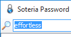

New in This Version
Version 1.0.0.41
Posted November 2nd, 2015

- It's now even faster to switch to Soteria and find your entry. Suppose you've already opened a web page from one entry, and now you're returning to the Soteria main window to find a different entry. Soteria recognizes that the Find window was the last thing you used and automatically selects all of the text inside so you don't have to clear it -- just start typing, and the old contents are automatically replaced by what you type -- no Delete key required.
- Potentially resolved an issue that was causing errors to be written to the log when single-click Task bar icons are double-clicked.